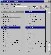

图片文件是占用磁盘空间的大户之一，一张高清晰度的BMP图片至少要占用400K～1000K的磁盘空间，这样的文件一多就会占用大量的磁盘空间。尽管将BMP文件转换为JPG格式可节省一定的磁盘空间，但当我们保存了较多图片时，JPG文件占用的磁盘空间仍嫌过多。能不能进一步减少JPG文件所占用的磁盘空间呢？如果你拥有JPEG Optimizer，答案就是肯定的。
JPEG Optimizer是一个JPEG图片文件优化工具，它可以在不影响浏览效果的前提下使JPEG格式的图形文件再缩小50％，有了它的帮助，我们就可以进一步减少图片文件所占用的磁盘空间了。
JPEG Optimizer的操作比较简单，我们只需单击快捷工具栏上的“Open”按钮，打开一幅需要优化的JPG图片文件，JPEG Optimizer就会立即对其进行优化，并将优化前后图片文件的大小及显示效果并排显示出来（如图所示），非常直观。
JPEG
Optimizer的原理非常简单，它主要是通过去掉图片文件中的无用信息来达到减小文件尺寸目的的，这就存在一个优化比例的问题——某些图片文件中的无用信息可能较多，这时我们就可以采用较高的优化比例以进一步减少磁盘空间；另外一些图片文件的无用信息可能较少，此时我们就必须采取较小的优化比例以防影响图片的显示效果。为正确地对图片进行优化，JPEG
Optimizer特意采用了智能侦探技术，它会自动根据每个图片文件中包含无用信息多寡的程度来自动调节对文件的优化比例，从而实现既不影响图片显示质量，又最大限度地缩小图片文件所占用磁盘空间的目的。当然，JPEG
Optimizer毕竟是一个软件，它自动侦探出来的优化比例不一定能满足每个用户的需要，此时我们就需要对它的优化比例进行适当的调节。为此，我们可利用鼠标拖动JPEG
Optimizer界面上的“Set the File Size and Quality”工具条上的滑杆。当滑杆越靠近“Small File”则图片的优化比例越高，图片效果越差；而当滑杆越靠近“Large
File”则图片的优化比例越低，图片效果越好（在“Set the File Size and Quality”对话框中输入压缩比例也可达到同样的目的），用户可根据需要加以选择。我们在改变优化比例之后，JPEG
Optimizer将会重新对图片进行优化，并将优化后文件显示出来，然后在参考优化后图片显示效果的基础上选择最佳的文件优化比例。优化工作完成之后，我们应单击快捷工具栏上的“Save”按钮，然后为优化后的图片指定一个文件名，以便将其保存下来（否则优化后的内容将不予保留）。
需要说明的是，JPEG Optimizer并非像它的名称“所说”的那样只能优化JPG图片文件，它还可以优化BMP、TIF、TGA等格式的图片文件，并且在优化完成后还可以直接将这些图片采用JPG格式保存下来，非常方便。如我们可直接利用JPEG Optimizer优化一张BMP图片文件，然后在优化完成后直接将其保存为JPG文件，其效果与先将BMP文件转换为JPG文件，然后再对JPG文件进行优化完全一样，从而进一步方便了用户对图形文件的优化工作（我们一般都是采用JPG格式来保存图片文件的，JPEG Optimizer自动对图片文件进行转换就免去了用户手工进行转换之苦）。另外在某些情况下，我们甚至还可以将JPEG Optimizer作为一个图片文件格式转换工具使用（当然它只能实现向JPG格式的转换）。
除逐个对文件进行优化之外，JPEG Optimizer还提供了同时对一批图片文件进行优化的功能，可进一步简化用户的操作。为此，我们只需执行JPEG Optimizer“File”菜单的“Batch”命令即可（注意，只有注册版的软件才有批量优化功能，我们在没有注册之前无法使用这一功能）。
赶快试试JPEG Optimizer吧！相信它会为你节省不少的磁盘空间（JPEG Optimizer的下载网址为Web:http:∥wwwxatcom/）。
(湖北 胡锦承) |